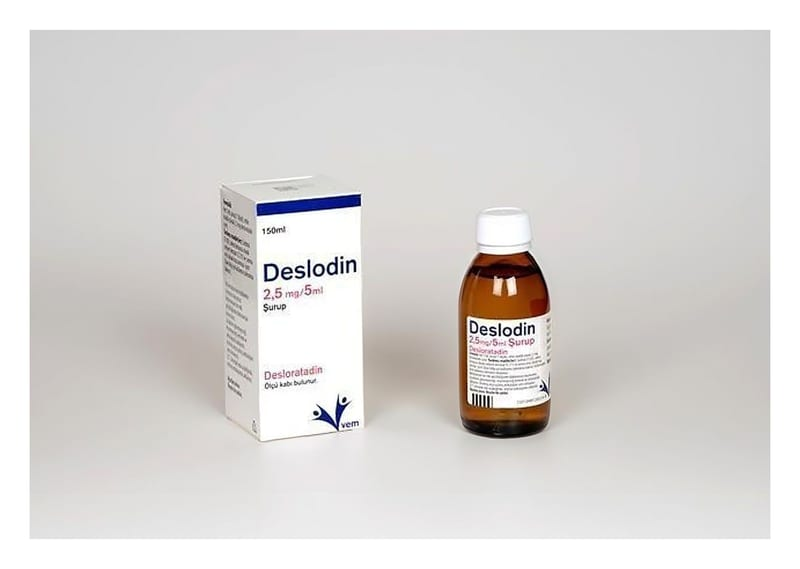

Deslodin 2.5 mg/5 ml Şurup, 150 ml

Ne için kullanılır
KT · Bölüm 1DESLODİN, bir antihistaminik ilaç sınıfından desloratadini içerir. DESLODİN, kilitli kapak sisteme sahip 150 ml’lik şişelerde ambalajlanmıştır. DESLODİN, uyku hali oluşturmayan antialerjik bir ilaçtır. Alerjik reaksiyonlar ve alerji belirtilerinin kontrol altına alınmasına yardımcı olur. DESLODİN alerjik nezle ile ilişkili hapşırık, burunda akıntı ve kaşıntı, damakta kaşınma ve gözlerde kaşınma, kızarıklık veya yaşarma gibi belirtileri (örneğin saman nezlesi, ev tozu akarına karşı alerji) giderir.
DESLODİN ayrıca, ürtiker (alerji ile görülebilen bir deri hastalığı) ile birlikte kaşıntının giderilmesi, derideki kabartı ve kızarıklık gibi belirtilerin ortadan kaldırılmasında da kullanılır. Bu belirtilerin giderilmesi tüm gün boyunca sürer ve normal günlük aktivitelerinize devam etmenize ve uyumanıza yardımcı olur.